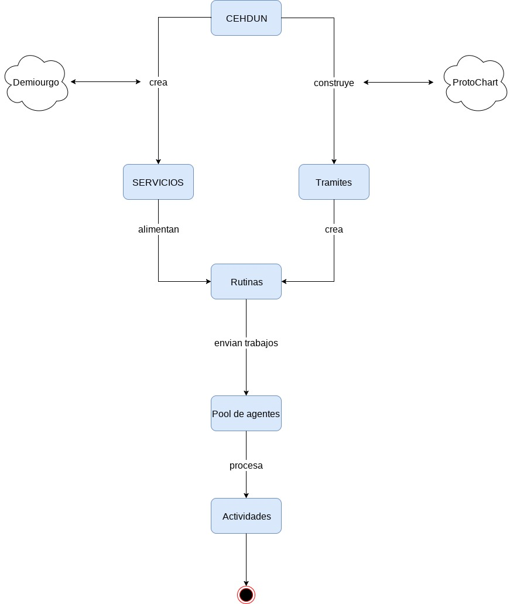

Componentes
"La aplicación esta compuestas por cuatro componentes principalesDistribuidos estratégicamente para solventar los problemas a nivel de estructura y de lógica".
Agente
“Entidad qué realiza rutinas con el fin de completar un tramite.”
Funciones
- Procesar SUB RUTINAS.
- Intercomunicar información con otros agentes
NEURON
"Entidad distribuida encargada de usar el CEHDUN para generar y validar la información correspondiente a los tramites".
Funciones
- Generar información.
- Validar la informacion
CEHDUN
"Conjunto estandarizado de herramientas de desarrollo para la union e interconexion de Neurones".
Funciones
- Generar Micro Servicios.
- Generar Tramites
- Gestionar Rutinas
- Gestionar Agentes

{kind=link}
CVDI

"Componente vital descentralizado de interconexion (sinapsis)."
Funciones
- Encargarse del flujo de trabajo, siendo el medio principal de comunicación por donde pasaran todas las conexiones.
{kind=link}
Bondades
- Alta Disponibilidad
Replicación de base de datos
arangoDB.replicate( 'replicate', function() {
start.Replicate("I'm on fire");
} );
Manejo de Concurrencia
func (d *Dispatcher) dispatch() {
for {
select {
case job := <-JobQueue:
go func(job Job) { jobChannel := <-d.WorkerPool }(job)
}
}
}
Benchmark

Trazabilidad de los tramites